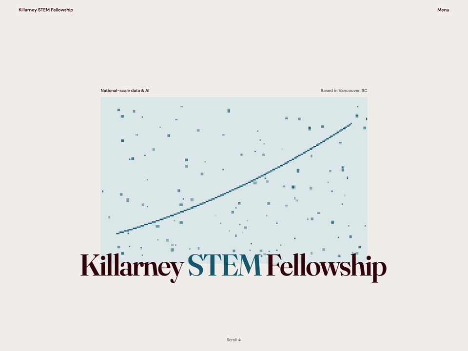

Killarney STEM Fellowship
A student-run chapter that books hands-on science workshops into Grade 5 classrooms in Vancouver.
- Client
- Killarney STEM Fellowship, an official STEM Fellowship Canada chapter at Killarney Secondary, Vancouver
- Scope
- Five-page site, built from scratch
- Heroes built
- Eight explored, one shipped

Takes
Eight heroes. Seven of them are still here.
Each one is a real coded page, not a sketch. Point at any of them to see it in full colour.They resolve into full colour as they reach the middle of the screen. The struck rule marks a take that did not ship.
Build
What is actually in it.
- Type
- Fraunces for display, IBM Plex Mono for data and labels, on a fluid
clamp()scale - Structure
- Five pages: home, workshops, programs, chapter, contact. Hand-written HTML and CSS, no framework
- Motion
- Canvas 2D for the data figures, IntersectionObserver scroll reveals, sticky positioning,
mix-blend-mode - Accessibility
prefers-reduced-motionrespected throughout- Meta
- Description,
og:url,og:imageand a favicon on every one of the five pages - Content
- Promotes five national programs: the Big Data Challenge, REO, the Scholarly Writing Internship and CYPT